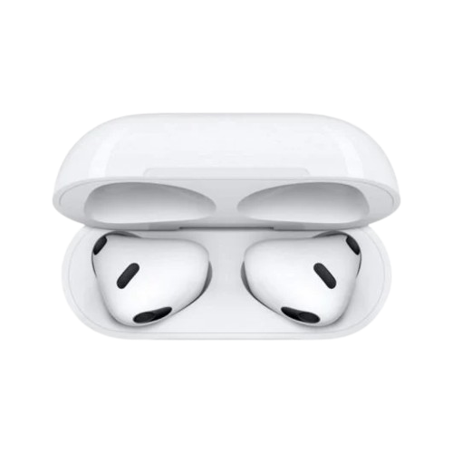

Sony WH-1000XM5
Los Sony WH-1000XM5 son auriculares inalámbricos de alta gama que ofrecen una calidad de sonido excepcional y una cancelación activa de ruido líder en la industria. Con su diseño elegante y cómodo, son perfectos para largas sesiones de escucha.
- Cancelación activa de ruido avanzada para una experiencia auditiva inmersiva.
- Calidad de sonido premium con drivers de 30 mm y soporte para audio de alta resolución.
- Conectividad Bluetooth 5.2 para una conexión estable y rápida.
- Controles táctiles intuitivos para gestionar la reproducción y las llamadas.
- Hasta 30 horas de reproducción con una sola carga y carga rápida.
Última actualización: 3 min
Volver al catálogo